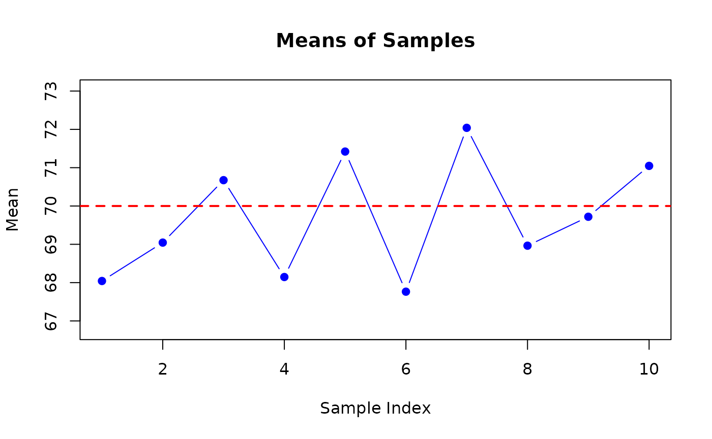
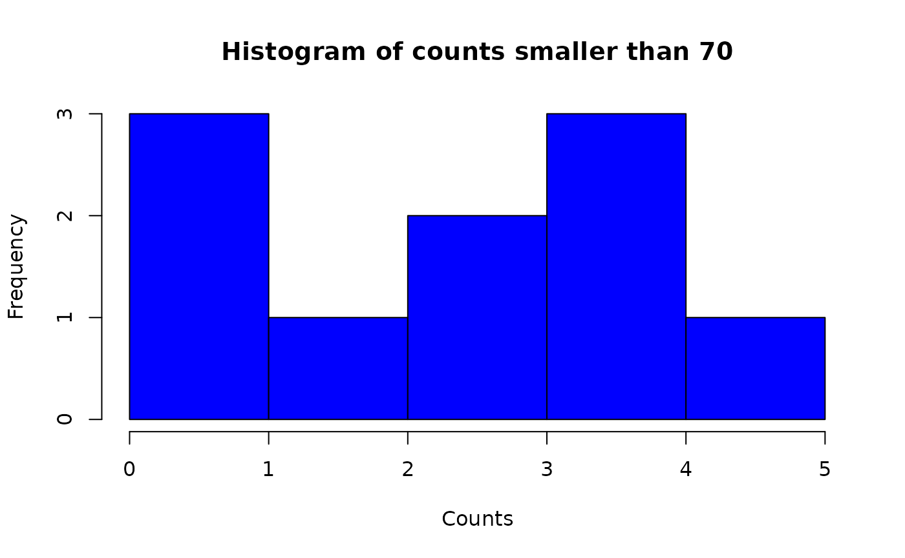

FinalProj561
FinalProj561.Rmdgenerate_samples
re <- generate_samples(5, 10, 70, 3.3)
re
#> $samples
#> $samples[[1]]
#> [1] 65.37986 70.84255 61.95703 69.98161 72.05112
#>
#> $samples[[2]]
#> [1] 73.78976 63.98800 69.18383 69.19414 69.06707
#>
#> $samples[[3]]
#> [1] 68.17279 72.07564 76.81458 64.61773 71.69101
#>
#> $samples[[4]]
#> [1] 63.85206 68.27736 69.82641 71.79189 66.98355
#>
#> $samples[[5]]
#> [1] 71.54491 71.19774 65.69501 72.43466 76.23207
#>
#> $samples[[6]]
#> [1] 69.67843 66.91170 69.94736 67.27160 65.00908
#>
#> $samples[[7]]
#> [1] 73.08670 70.58241 70.80416 75.35771 70.36973
#>
#> $samples[[8]]
#> [1] 69.55781 63.69671 69.07852 68.96563 73.52212
#>
#> $samples[[9]]
#> [1] 70.23112 67.89089 69.83512 69.17010 71.46783
#>
#> $samples[[10]]
#> [1] 79.09288 70.15355 71.90644 70.39004 63.69132
#>
#>
#> $mean
#> [1] 70calculate_means_and_plot
mean_re <- calculate_means_and_plot(re)
mean_re
#> $mean
#> [1] 68.04243 69.04456 70.67435 68.14626 71.42088 67.76364 72.04014 68.96416
#> [9] 69.71901 71.04685
#>
#> $graph
#> NULLcount_values_and_plot_histogram
samples_re <- re$samples
count_re <- count_values_and_plot_histogram(samples_re, 70, "smaller")
count_re
#> [1] 3 4 2 4 1 5 0 4 3 1